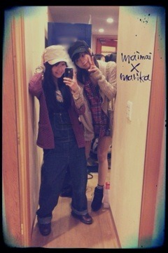

| 2012/04 04 Wed | 108回目*marika |
いつも読んでくださってる方、
初めて読んでくださった方、
コメントしてくださった方
ありがとうございます*
1日エイプリルフールやったね
忘れてたあぁああぁ
そいえば、またちゅーされたんよ。
えっ、報告いらんて⁇
でも連続ちゅーですぞー⁉
みさにもされて...(いっつもやけど)笑
さゆりんにもちゅっちゅっちゅっちゅされてしまって
うあああぁあぁぁ////////
そんで、ちゅーされたら
みんなに「にやにやすんな」てツッコまれる笑
てれるからしかたないじゃろーーーーー
今日はすごい風でした。
みなさん大丈夫でしたかーーーx(⁇‼
まりかはずっと家におりました。
外出てたら間違いなく飛ばされてただろう。
すごかったよ。
家にいても風の音びゅんびゅんきこえてたから。。
早く落ち着いたよい天気になればいいな。

OFFの日だったので、ゆっくり休みました

最近の私服じゃ


まいまいー
 帽子が似てるの。
帽子が似てるの。
帽子が似てるの。
オーバーオールめっちゃ楽‼
インナーが総柄でめちゃくちゃかわいいけど、
この写真じゃ全く見えんっっ

あーんもうっまったくねっもうっ←
＊＊＊
Secondシングル「おいでシャンプー」
Firstと同じく個人pvが収録されます

伊藤万理華×有元沙矢香、山本真希
「デート前日の気持ち」
わくわく
Firstと全く違った感じです^^
楽しみにしててください

＊＊＊
では質問回答いくで。はいやっ
.................
俺バンドくんでいるんですけど...
好きなバンドとかありますか？
 バンド‼かっちょいー
バンド‼かっちょいー

すきなバンドは...いっぱいいうと
flumpool
GalileoGalilei
ASIAN KUNF-FU GENERATION
東京事変
ねごと
相対性理論
...
です


この前のゲリラティッシュ配りで
「いつもコメントしてる○○です。」
っていってティッシュもらったの覚えてるかな？
顔見ればわかるかな？
ふふー^^覚えたっ

ベビたんがテスト勉強のときに
食べたりするお菓子とか、
使う文房具ってなんですか？
リビングにナッツ置いてあるので
リビングで勉強するときはばりばり食べとる

使ってる文房具...
消しゴムはMONO

あーけっこう筆箱開けたら
カラフルで統一感があるかも‼
ちなみに筆箱はCHUMSの水色です♪
これからずっとおでこ出してくれませんか??ww
おおーう
おでこ出す機会があれば出すよーxD
まりちゃん可愛すぎる...
ちょっとその可愛さズルくない？(笑)
うあああぁーーーー
ありがとうーーーーーーーー><

どどどどうしよう><嬉しすぎます
 ←
←
←
俺の前世見てくれませんか？ww
...うん⁇
女子のファンでもうれしいですか？
またコメントします！
なーにもうっ‼
そりゃそりゃ嬉しくないわけがないです

うんっまたコメントしてください
ファンレターをまりかちゃんに
書こうと思っているんだけど
もらったらうれしい？？
もちろん
大事に読んでます＊
なんでメキシコ行きたいの(^^)？
テキーラとか飲みたいのカナ？ｗ
こらっお酒はハタチからでしょう‼
メキシコ雑貨が好きだから行きたいっ

私、島根県に住んでるんですよ。
それでどうしても乃木坂46やまりりんに会いたいんですよ
島根県で握手会はやらないんですか⁉
すごく来てほしいんです
こうやってBloGで繋がってるから
私を知ってくれているのがわかって嬉しい＊
島根‼行きたい‼というか会いたい‼
いろんなところでイベントしたいです

名前の一色って本名
なんですけどなんて読むか
わかります？？ｗ
いっしき...⁇
違うかな><⁇

てか、ベビたんはまりかって
読んでほしかったんだね!
どっちで呼ぼうか悩んじゃうな～
もはや「ベビか」ってどう(笑)?
えーベビかってだめよー

もう高校二年生なんだからっ
一応←
まりかって呼びたいけど...。
何か抵抗あるなぁ。
まりっしゅで落ち着きます。
まりっしゅ。
うん、なかなかよい響き
 ぇ
ぇ
ぇ
柿ピーにピーナッツは必要だと思いますか？
ピーナッツと一緒に食べるのがおいしいよ

鉢巻系男子ってどう思う？
熱血‼
体育祭で鉢巻するけど...燃えるね

うおおおおぉぉおって。
鉢巻にはぜひ「乃木坂46」で

ここまで:)
.................
全握のリハ頑張りまりか‼
うおおおおぉぉお

おやすみなさい
まりか
コメント(128)
2012/04/04 01:54